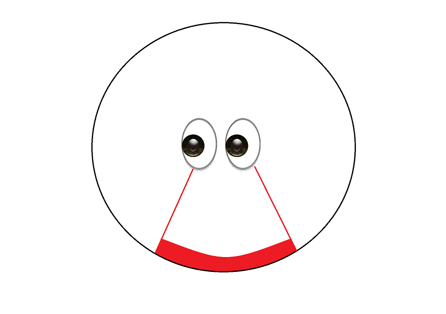
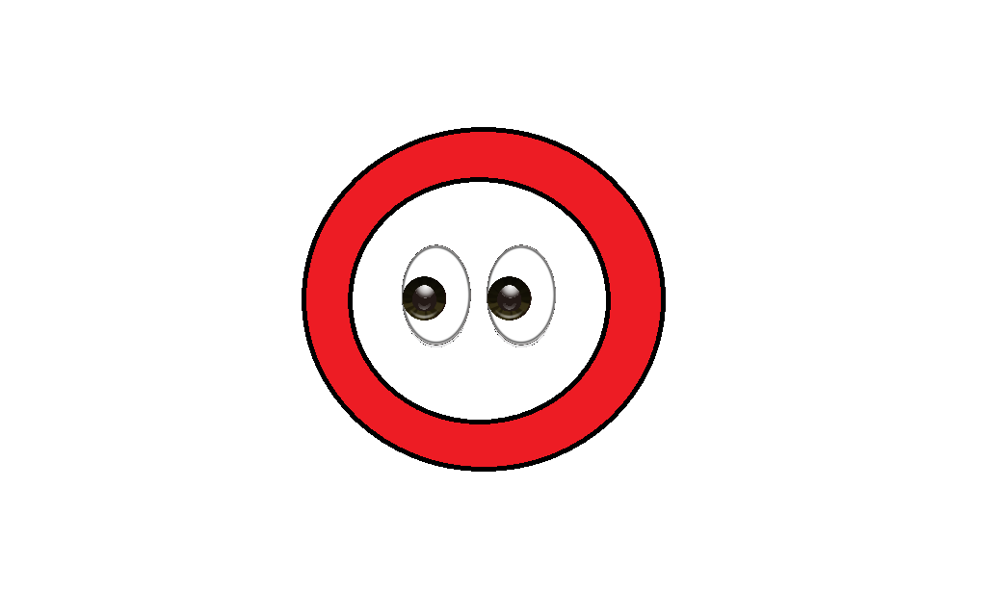

360view
Table of Contents
Seeing Everything: A Visual Perception Experiment Proposal
Draft: v1.0 | Posted: 12/9/2017 | Updated: 12/9/2017 | confidence of success: 5% | estimated time to completion: Likely Never | importance: Low
Abstract
I am no longer a cognitive science student, but every so often I will read / watch something that makes me think "This would make a fantasic experiment". Most people, faced with this kind of situation, usually use this thought as a cue to write science fiction, but this idea has been bothering me so much for so long that I feel like I need to flesh out the idea in a sort of blog-post fashion.
The purpose of this experiment is to apply projections used in cartography to human vision, allowing for an abnormally wide field of vision (ideally close to 360 degrees). This will be done using a VR headset and a helmet of strategically placed ultra-low-latency cameras. There exists the possibility for visual adaptation similar to Stratton 1896, in which visual perception is flipped upside-down after wearing inversion goggles. 360 vision would obviously be a huge asset to groups such as soldiers or pilots, and it's possible that becoming adjusted to this style of vision and then removing it would cause a feeling of "blindness" behind oneself.
Intro
In cartography, a lot of thought has been put into how best to map the surface of a sphere onto a two dimensional image. You can't merely "cut apart" the surface of a globe and flatten it - it's like trying to flatten an orange peel. As such, mapping projections unavoidably come with some distortion of the terrain, typically at the edges (i.e. Antarctica).
Human vision is rather limited, as we only have two eyes in the front of our heads and can only see roughly 190 degrees in front of us, with the outer 40 degrees on either side not having any sort of binocular vision (due to only being perceptible by one of the two eyes). Put in a crude diagram, you can imagine it like so:

If you imagine a human that could theoretically see the entire 360 FOV around themselves, their vision would crudely be represented like so:

That is, you can imagine this problem like mapping the surface of a sphere from the inside, which if you flip inside out just transposes to the already-well-established field of cartography. Indeed, this has already seen some use in the testbed of video games with some success (and was the inspiration for this project)
This naturally comes with some distortion of the visual field, but given how little of the visual field actually matters aside from what the participant is actually gazing at, this seems like a very small price to pay for 360 FOV Vision. (One of my favorite examples comes from McConkie & Rayner 1975 where letters in a text were replaced with X's when not directly being looked at. Participants were often completely unaware that the text was abnormal at all, a mere couple of degrees actually being percieved and the rest just being haphazardly filled in by visual perception. Spooky!)
{kind=link}
Apparatus
The apparatus for this experiment is pretty straightforward, using a Virtual Reality headset (for example, Oculus Rift, or HTC Vive) as well as a few high-end cameras with suitable resolution, framerate, and low latency. A broadband fiber cable company built something similar for a commercial in 2014 with the opposite intention, to demonstrate a way to create "lag" in real time:
Of course, for real use such a rig would need to be comprised of a camera fast enough to not have this lag and be at least a somewhat decent replacement for human vision. The only cameras I could find with these numbers come from OptiTrack which suggest that this project is feasible (example specifications are 240fps / 4.2ms latency which are roughly good enough given my other research) but the $2000 price tag per camera (for a rig that would likely require at least 6) puts this squarely out of hobbyist range, unless there are suitably similar cameras for a much lower price.
The cameras would map onto the headset's visual plane via a standard mapping projection, offset on each eye to preserve binocular vision as much as possible. From the video cited above, the Winkel Tripel projection seems like a good choice for projecting an image that changes (compared to a static map), but there's certainly no shortage of other options - Richard Capek wrote a paper in 2001 ranking them, and his list gives the nod to the Ginzburg V projection. I'm sure there's adjustments to be made for one that changes in real time, but it's mostly a matter of implementation rather than design.
Adaptation
This experiment is a loosely more tech-oriented version of Stratton 1897, in which he wore glasses that used mirrors to invert his visual field. He found that after a while he was able to adapt to this completely, his perception reorienting the image.
I think the fun part of this experiment is that 360 vision isn't just a modified version of a normal type of sensory perception, it's a direct augmentation - adapting to being able to see behind you and then immediately no longer being able to see behind you wouldn't just be "reorienting" your perception, but rather stripping you of a great deal of your visual perception, and I can't help but wonder if it would feel like being blinded in your peripheral vision, or even just highly annoyed at it, as you might be by changing the FOV in an action video game to 90 degrees instead of 170.
Applications
360 vision seems like it would be a very useful tool in a number of scenarios, although most of the ones that immediately jump out to me are combat-related. You can imagine a fighter pilot engaged in a dogfight with an enemy, and not needing to crane their head and rely on looking in the right direction since every direction is the right direction. There's precedent for using augmented vision for fighter pilots to eliminate blind spots and such, and an increased FOV seems like a natural addition if it is found that adapting well to the distorted visual field is plausible.
This experiment is obviously quite a bit out of my financial reach to perform myself, but I certainly can imagine a visual perception lab recieving a grant from HTC to run this with their product - it would be great PR for them and an exciting step for VR technology which is primarily focused on gaming at the moment.
If nothing else, it would be fun to play a VR game in which I control a giant evangelion-like robot from my chair with this kind of augmented visual perception.
Citations and Links
McConkie & Rayner 1975, The span of the effective stimulus during a fixation in reading
Stratton 1897, Vision without inversion of the retinal image.
Banatt 2016, A Rough Test of Human Visual Perception's "Framerate"
Banatt 2017, Input Latency Perception in Expert-Level Gamers
Capek 2001, WHICH IS THE BEST PROJECTION FOR THE WORLD MAP?
posted on 12/9/17